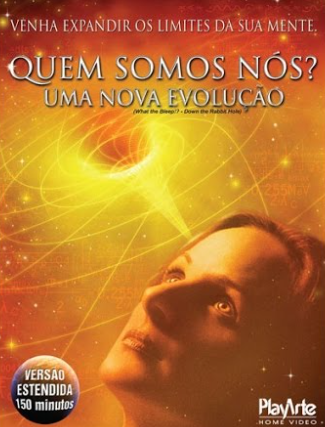
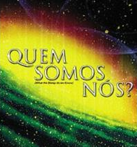
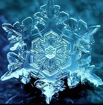
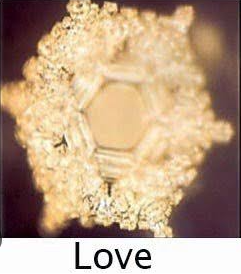
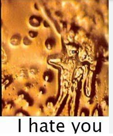
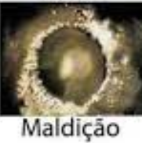
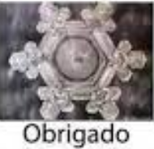

DOCUMENTÁRIO: QUEM SOMOS NÓS?
O documentário “Quem Somos Nós?” (título original em inglês: What the Bleep Do We Know!?) é uma produção estadunidense lançada em 2004, dirigida por William Arntz, Betsy Chasse e Mark Vicente.
Sobre o que é:
É um filme que mistura elementos de ficção, animação e depoimentos, com foco em neurociência, espiritualidade e física quântica.
Ele explora ideias como:
- A noção de que a mente do observador molda a realidade.
- A física quântica sugerindo que “espaços vazios” são fontes de energia, o que leva à crença de que pensamentos podem influenciar matéria física.
Nele acompanhamos a jornada da personagem Amanda (Marlee Matlin), que vivencia uma crise existencial enquanto especialistas comentam temas como consciência, criação da realidade e potencial de cura mental.
|  |  |  |
Resumo: "Quem Somos Nós?" é uma produção dos EUA que propõe uma reflexão mista entre ciência e espiritualidade. Através de uma narrativa híbrida (ficção + entrevistas + animação), o filme sugere que a nossa consciência e percepção podem não apenas interpretar, mas criar a realidade que vivemos.
ENERGIA DA ÁGUA - trecho do filme "QUEM SOMOS NÓS?"
|  |  |  |  |
“Os nossos pensamentos e sentimentos moldam cada célula de nossos corpos.”
Inclusive a maior forma de observar essa realidade é quando você está apaixonado(a), sentindo amor verdadeiro por alguém. Pode ser a descoberta do amor puro e verdadeiro por uma pessoa ou a descoberta do nascimento de um filho.
Você já deve ter experimentado (ou observado) alguém, que quando estava apaixonado foi para a academia e perdeu peso, ficou em forma. Ou se curou de uma doença. Doenças que antes te atingiam são curadas pelo sentimento de amor. A alegria do amor é tanta, que o seu corpo todo passa a expressar esse sentimento. Como o amor é perfeição e alegria. E a doença é raiva e estresse. A doença então vai diminuindo, e a pessoa se cura “milagrosamente”.
O contrário também é válido: sentir raiva, ódio e estresse adoecem o corpo humano. Se um torcedor ávido no estádio de futebol ficar muito nervoso, por exemplo, a emoção e a raiva desenfreada dele podem fazer explodir uma veia no cérebro dele e leva-lo a obtido imediatamente.
Por isso, é importante compreender como somos sensíveis às nossas emoções.
Afinal, como é mostrado no documentário, se a energia modifica a água - e mais de 60% de nossos corpos são água - imagina o que as energias (pensamentos e sentimentos) não são capazes de fazer com nossos corpos?
Só por curiosidade, conforme imagem acima. A porcentagem de água presente no nosso organismo depende de nosso faixa etária.
A perfeição de um floco de neve. Do livro "Conversando com Deus".
Vocês já viram a perfeição de um floco de neve?
Se eu fiz isso com um floco de neve. Imagina o que eu fiz com o universo?
Proin feugiat turpis vitae purus imperdiet, at consectetur elit iaculis. Nunc finibus nunc volutpat, fringilla massa non, lacinia turpis. Quisque bibendum turpis nec metus ultricies, id vulputate turpis accumsan. Etiam euismod pellentesque mi malesuada tincidunt.